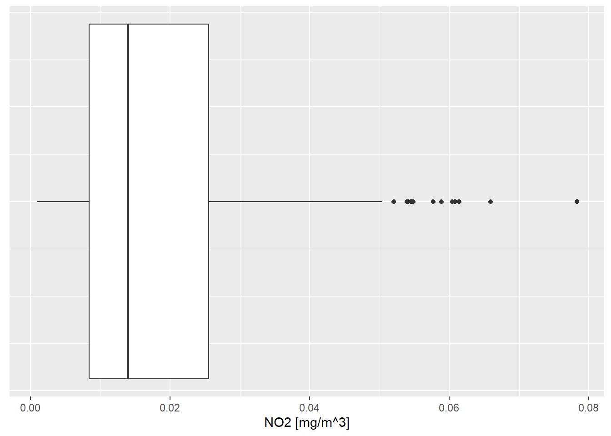
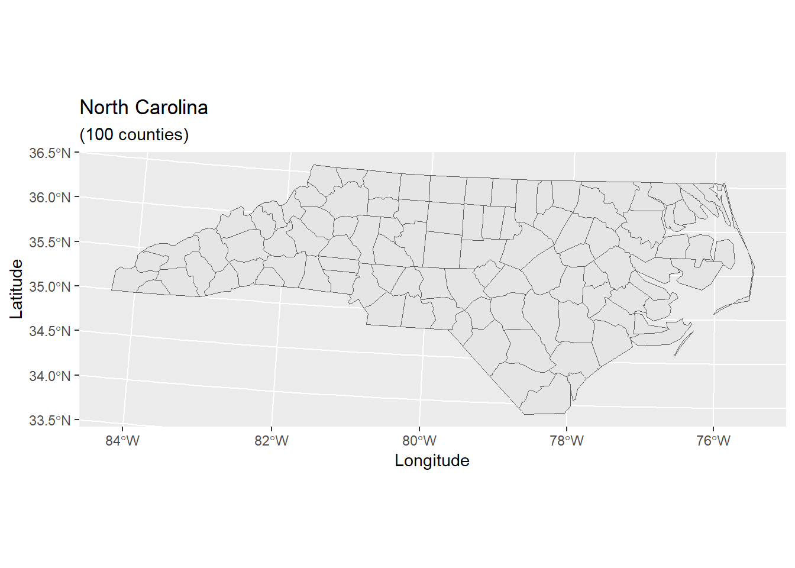
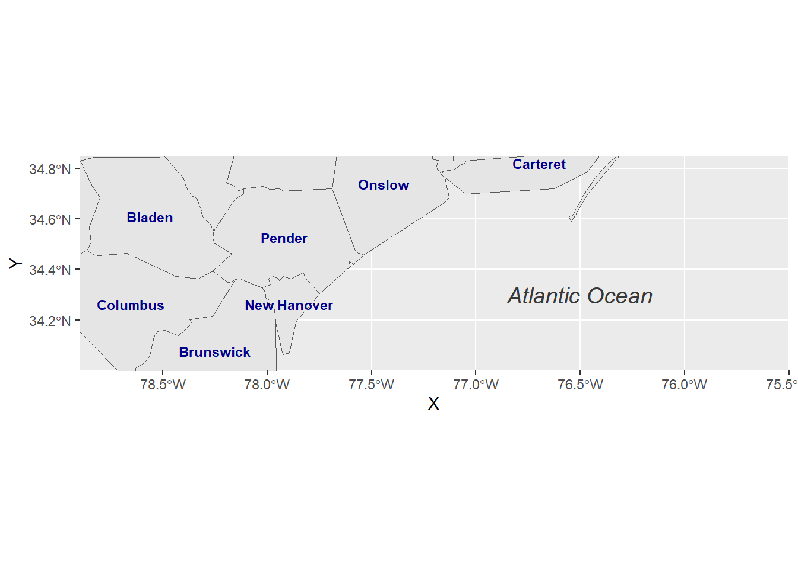

R has a very rich set of graphical functions. The R Graph Gallery provides a large number of examples (including code).
In this lesson you will get to know the ggplot2 library, which is the most popular library for creating graphics in R. You will learn to create standard graphs such as histograms, boxplots or scatterplots as well as maps.
10.1 The Grammar of Graphics
The ggplot2 library, a part of the Tidyverse suite, is renowned for its comprehensive and intuitive approach to data visualization in R. Rooted in the principles of “The Grammar of Graphics”, conceptualized by Leland Wilkinson, ggplot2 enables users to construct graphics through a layered approach, incorporating seven distinct elements.
The Grammar of Graphics is a schema that enables us to concisely describe the components of a graphic. These components are called layers of grammatical elements. Overall, the grammar comprises seven layers:
Data: The core dataset to be visualized.
Aesthetics: Mappings of variables to visual scales, like color or size.
Geometries: The visual representation of data, such as points, lines, or bars.
Facets: Creating subsets of data to generate similar graphs for each subset.
Statistics: Applying statistical transformations to data (mean, median, etc.).
Coordinates: Managing axes and spatial transformation.
Themes: Customizing the graphical backdrop for enhanced visual appeal.
In essence, these layers enable a structured and flexible approach to crafting visual narratives from data.
For instance, the visual variables such as size, shape, and color offer nuanced ways to represent and differentiate data points. In the example below, ‘GPD per capita’ and ‘Life Expectancy’ align with the x and y axes, respectively, and ‘national population’ and ‘world regions’ are differentiated by size and color.
Figure 10.1: Visual variables in Bubble Chart. Source: Gapminder
Exercise
In the interactive window above, click Options. You will find settings for specifying visual variables like X and Y, Size and Color.
The Gapminder Project makes data from various sources like UN, FAO or World Bank accessible. You may select from those databases and assign other variables to X and Y, size or color.
In the upcoming examples, we will use ggplot2 together with function aes() to programmatically set mappings of visual variables in diagrams and maps.
Tip
For a foundational understanding of “The Grammar of Graphics” as implemented in ggplot2, refer to Hadley Wickham’s insightful article.
10.2 Understanding Wide and Long Data Formats in R
When working with data in R, especially for visualization purposes, it’s crucial to understand the structure of your dataset. Typically, datasets can be categorized into two main formats: Wide and Long (also known as Tidy) formats. The format of your data can significantly impact how you manipulate and visualize it.
10.2.1 Wide format
In a wide-format dataset, each subject or entity (such as a city) is represented once, with multiple columns for different variables or time periods.
For instance, consider a dataset representing annual rainfall measurements across different cities, measured in millimeters (mm). In this wide format, each row corresponds to a city, and the columns represent rainfall measurements for different years:
# Example of a wide format datasetwide_data<-data.frame( City =c("CityA", "CityB", "CityC", "CityD", "CityE"), Rainfall_2015 =c(600, 500, 550, 450, 400), Rainfall_2016 =c(650, 550, 600, 500, 450))knitr::kable(wide_data)
City
Rainfall_2015
Rainfall_2016
CityA
600
650
CityB
500
550
CityC
550
600
CityD
450
500
CityE
400
450
10.2.2 Long format:
In a long-format dataset, each row is a single observation for a single variable, often requiring multiple rows per subject or unit.
Using the same rainfall dataset as an example, a long format would list each year’s rainfall for each city as a separate row:
# Example of long-format data:long_data<-tidyr::pivot_longer(wide_data, cols =-City, names_to ="Year", values_to ="Rainfall")knitr::kable(long_data)
City
Year
Rainfall
CityA
Rainfall_2015
600
CityA
Rainfall_2016
650
CityB
Rainfall_2015
500
CityB
Rainfall_2016
550
CityC
Rainfall_2015
550
CityC
Rainfall_2016
600
CityD
Rainfall_2015
450
CityD
Rainfall_2016
500
CityE
Rainfall_2015
400
CityE
Rainfall_2016
450
Understanding these formats is crucial for effective data manipulation and visualization in R, especially when using libraries like ggplot2 and tidyverse. Certain types of visualizations and statistical analyses are more straightforward with data in a specific format.
Tip
Transforming data between wide and long formats is often achieved using functions like pivot_longer() and pivot_wider() from the tidyr package, which is included in the Tidyverse.
10.3 Visualization of distributions
As already mentioned above, functions in the ggplot2 library are structured according to “The Grammar of Graphics”. When creating graphs with ggplot2, we start by setting up data and aesthetics (aes()), then defining the type of plot (geometry) like geom_point, and finally enhancing the plot with additional transformations and themes.
We begin the analysis with a simple histogram, to explore the distribution of air quality data that has been measured at different locations in Upper Austria.
The code below filters the airquality dataset by measurement component and temporal resolution. Then the data subset is passed as a first argument to function ggplot(). In the second argument, we map the variable value onto the x-axis with the aesthetics argument aes(). geom_histogram() specifies the geometry of the plot and theme_bw() is used to add a background theme.
# filter NO2 measurements with temporal resolution 30min (HMW)airquality%>%dplyr::filter(component=="NO2"&meantype=="HMW")%>%# create plot ggplot2::ggplot(., # the dot '.' represents the piped value aes( x =value# map variable 'value' onto x-axis))+ggplot2::geom_histogram()+# define geometryggplot2::theme_bw()# define theme
To differentiate between measurements from various stations, we can map the station variable to the color attribute:
This is implemented by adding an attribute fill = station to the aesthetics element (aes()). ggplot2 offers a number of functions to specify your own set of mappings from levels in the data to aesthetic values. In the example above the function scale_fill_manual() is used to map the three levels S125, S270 and S431 to the fill colorsgrey20, grey50 and grey80. Instead of ‘ggplot colors’, you can also use hex color codes.
Note that plot components are added by means of a plus ‘+’ sign. It allows you to start simple, and then get more and more complex.
Exercise
So far, we have added two axis labels. Create a new R-Script, download the input data, recreate the histogram and insert one additional line of code to add a plot title (see documentation).
The same basic syntax is used to create other types of plots like bar plots (use geometry geom_bar() or geom_col(), line plots (use geometry geom_line()) and many others.
For instance, if we replace geom_histogram() by geom_boxplot(), the value distribution of NO2 measurements is visualized by means of a box plot:
# filter NO2 measurements with temporal resolution 30min (HMW)airquality%>%dplyr::filter(component=="NO2"&meantype=="HMW")%>%# create plot ggplot2::ggplot(., # the dot '.' represents the piped value aes( x =value# map variable 'value' onto x-axis))+ggplot2::xlab("NO2 [mg/m^3]")+ggplot2::geom_boxplot()+# define geometryggplot2::theme( axis.text.y =element_blank(), # remove text and ticks from y axis axis.ticks.y =element_blank())

Note that the last two lines remove text and tick marks from the y-axis of the plot.
Just as histograms, box plots are used to inspect distributions in data. The interpretation, however, does require some additional information.
The lower and upper edge of the box (the so-called lower and upper hinges) correspond to the first and third quartiles. The vertical line that separates the box indicates the median value (second quartile).
The upper whisker extends from the hinge to the largest value no further than 1.5 * IQR from the hinge (where IQR is the inter-quartile range, or distance between the first and third quartiles). The lower whisker extends from the hinge to the smallest value at most 1.5 * IQR of the hinge. Data beyond the end of the whiskers are called “outlying” points and are plotted individually.
Exercise
In our histogram examples, we have mapped the variable ‘station’ onto visual variable color to separately visualize measurements of different stations. Try to apply the same approach to render measurements of stations S125, S270 and S431 separately in a box plot.
Scatterplots serve as a pivotal tool in statistical analysis, particularly when it comes to exploring the interplay between two variables. Their strength lies in visually capturing the nature and strength of relationships.
Consider the scenario where we seek to understand the relationship between air temperature (TEMP) and relative humidity (RF). For this purpose, we delve into the airquality dataset, focusing on half-hourly readings from station S108. Our objective is to juxtapose the temperature and humidity readings and analyze their correlation:
# Extract half-hourly temperature readings from station S108temp_tab<-airquality%>%dplyr::filter(component=="TEMP", meantype=="HMW", station=="S108")# Similarly, extract half-hourly humidity readingshumidity_tab<-airquality%>%dplyr::filter(component=="RF", meantype=="HMW", station=="S108")# Join the two datasets on 'time'temp_humidity_joined<-temp_tab%>%dplyr::inner_join(humidity_tab, by ="time")%>%dplyr::select(time, value.x, value.y)# Create the scatterplotggplot(temp_humidity_joined, aes(x =value.x, y =value.y))+xlab("Air Temperature [°C]")+ylab("Relative Humidity [%]")+geom_point(color ="blue")+geom_smooth(method =lm, color ="red", fill ="#69b3a2", se =TRUE)+theme_minimal()
The generated scatterplot vividly illustrates the relationship between air temperature and relative humidity. Typically, as the temperature drops, the relative humidity tends to rise, and vice versa. This inverse relationship, although not strictly linear, can be approximated using a linear regression model. Deviations from this model are captured within a 95% confidence interval, providing a more nuanced understanding of the data dynamics.
For a comprehensive explanation of the inverse relationship between relative humidity and temperature, refer to this video
Exercise
Copy and run the code example from above in a new R-Script. Note that the air quality data as well as the tidyverse library must be loaded to run the code in a standalone R-script file.
How many individual measurements are visualized in the scatterplot?
What do value.x and value.y represent in this context?
The geom_smooth() function, with method = lm, fits a linear model. What is the significance of the se argument in this function?
Solution
The scatterplot encompasses 45 records, corresponding to half-hourly measurements over approximately 24 hours.
In the joined dataset, value.x and value.y represent the temperature and humidity values, respectively, after renaming to avoid duplication.
The se argument controls the display of confidence bounds around the regression line, which are shown when se is set to TRUE.
10.6 Map Visualization
In our previous exploration, we learned how to employ the plot() function for basic map layouts. This section, however, elevates our cartographic journey by harnessing the versatility of the ggplot2 library for more intricate map visualizations.
Before diving into the examples, ensure you have the sf and ggplot2 libraries installed and loaded. Additionally, download the North Carolina and US States datasets for practical implementation.
Our first endeavor is to construct a foundational map of North Carolina:
In the code above, we first load the North Carolina shapefile as an sf() object and then assign the data to the ggplot() graph. The geom_sf function adds a geometry stored in a sf object. Other map components such as title and axis labels are added by means of a plus sign. Note that length(unique(nc$NAME)) returns the count of table rows, which corresponds to the number of geometries/counties. Geometry count and string “counties” are concatenated by function paste0().
The geometry element geom_sf provides a number of arguments to customize the appearance of vector features:
# Map with custom colorsggplot(data =nc)+geom_sf(color ="black", fill ="lightgreen")+xlab("Longitude")+ylab("Latitude")+ggtitle("North Carolina", subtitle =paste0("(", length(unique(nc$NAME)), " counties)"))
Data attributes can be visually represented as well. In this example, the AREA variable influences the fill color:
The function coord_sf() allows you to work with the coordinate system, which includes both the projection and extent of the map. By default, the map will use the coordinate system of the first layer or if the layer has no coordinate system, fall back on the geographic coordinate system WGS84. Using the argument crs, it is possible to override this setting, and project on the fly to any projection that has an EPSG code. For instance, we may change the coordinate system to EPSG 32618, which corresponds to WGS 84 / UTM zone 18N:
# Map with changed coordinate systemggplot(data =nc)+geom_sf()+coord_sf(crs =st_crs(32618))+# Projecting to WGS 84 / UTM zone 18N xlab("Longitude")+ylab("Latitude")+ggtitle("North Carolina", subtitle =paste0("(", length(unique(nc$NAME)), " counties)"))

The extent of the map can also be set in coord_sf, in practice allowing to “zoom” in the area of interest, provided by limits on the x-axis (xlim), and on the y-axis (ylim). The limits are automatically expanded by a fraction to ensure that data and axes do not overlap; it can also be turned off to exactly match the limits provided with expand = FALSE:
Note that scale bar and north arrow are available with package ggspatial.
In the following example, we will assign labels to vector features. The function geom_text() can be used to add a layer of text to a map using geographic coordinates. The North Carolina dataset contains county names as column (column: NAME). In order to define label positions, we take the centroids of the county polygons (function st_centroid()), derive x and y coordinates from centroids (function st_coordinates()), merge the new x and y columns with the columns of nc and assign the output to a new variable identifier nc_points:
Note that the reading direction of pipe syntax code is from left to right (more intuitive), whereas standard syntax (nested functions) is read from right to left.
After deriving centroid coordinates from nc geometries, we call the new variable nc_points in function geom_text and map X and Y columns (centroid coordinates) onto visual variables x and y (position in graph) and also map column NAME onto visual variable label. Moreover, we can insert individual text annotations manually by means of function annotate():
ggplot(data =nc)+geom_sf()+geom_text(data=nc_points,aes(x=X, y=Y, label=NAME), color ="darkblue", fontface ="bold", check_overlap =FALSE, size =3)+annotate(geom ="text", x =-76.5, y =34.3, label ="Atlantic Ocean", fontface ="italic", color ="grey22", size =5)+coord_sf(xlim =c(-78.9, -75.5), ylim =c(34, 34.85), expand =FALSE)

In our final example, we combine previously introduced methods to craft a detailed map visualization. This example layers data sources, customizes feature appearances, and adds informative annotations:
Here, geom_sf() adds layers of US state polygons. geom_label() offers an alternative to geom_text() for feature labeling, with nudge_x providing horizontal label offset. The map is saved in both PDF for high-quality prints and PNG for web use.
The pipe operator (%>%) conveniently adds layers, thanks to Leaflet’s function design.
Tip
The function addTiles() per default adds OpenStreetMap map tiles. You may use the function addProviderTiles() to add other map tiles. Leaflet supports a large number of basemap layers.
The same pipe-syntax can be used to add Markers and HTML Labels or Popups. In the following example, an HTML Popup locates a restaurant:
library(leaflet)content<-paste(sep ="<br/>","<b><a href='https://www.techno-z.at/standort-und-service/gastronomie/'>Bistro im Techno_Z</a></b>","Schillerstrasse 30","5020 Salzburg","This is where I had lunch today!")leaflet()%>%setView(lng =13.040030, lat =47.823112, zoom =18)%>%addProviderTiles("OpenStreetMap.Mapnik")%>%addPopups(13.040030, 47.823112, content, options =popupOptions(closeButton =TRUE))